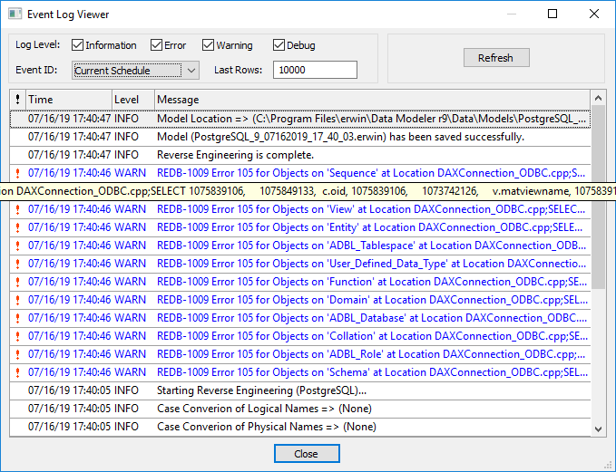

Viewing Event Log
The Scheduler generates an event log for each RE job that you run. To view the event log, follow these steps:
- In the Calendar View, right-click a job event tile.
- Click Event log.
The Event Log Viewer screen appears.

By default, it displays all types of messages for the current schedule. Work with the following fields to customize the event log.- Log Level: Select or clear the message type check boxes to include or exclude certain message types.
- Event ID: Select whether you want to view the log for all events or the current schedule.
- Last Rows: Specify the number of latest rows of the event log that you want to display.
- To regenerate the event log with any changes that you made, click Refresh.